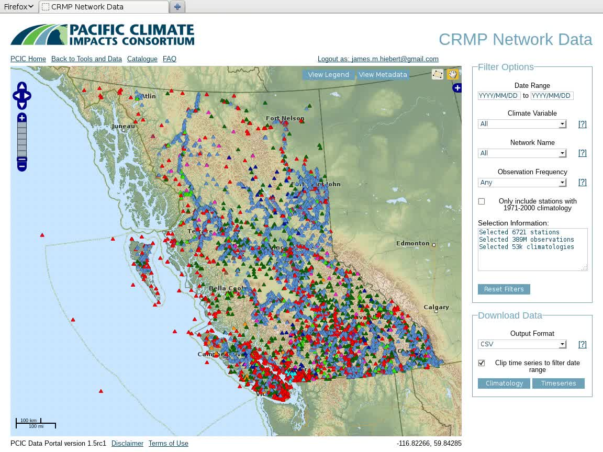
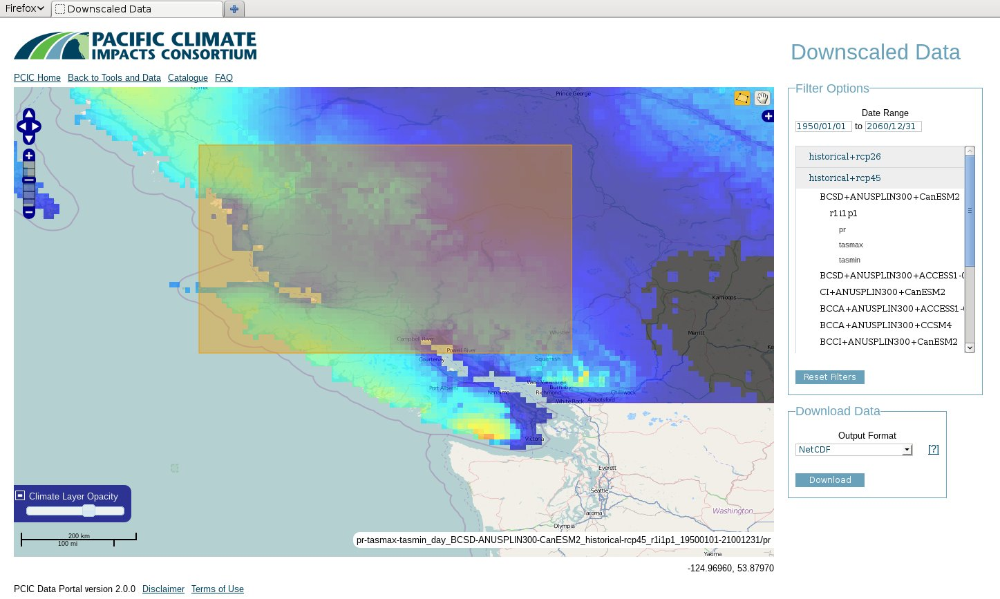
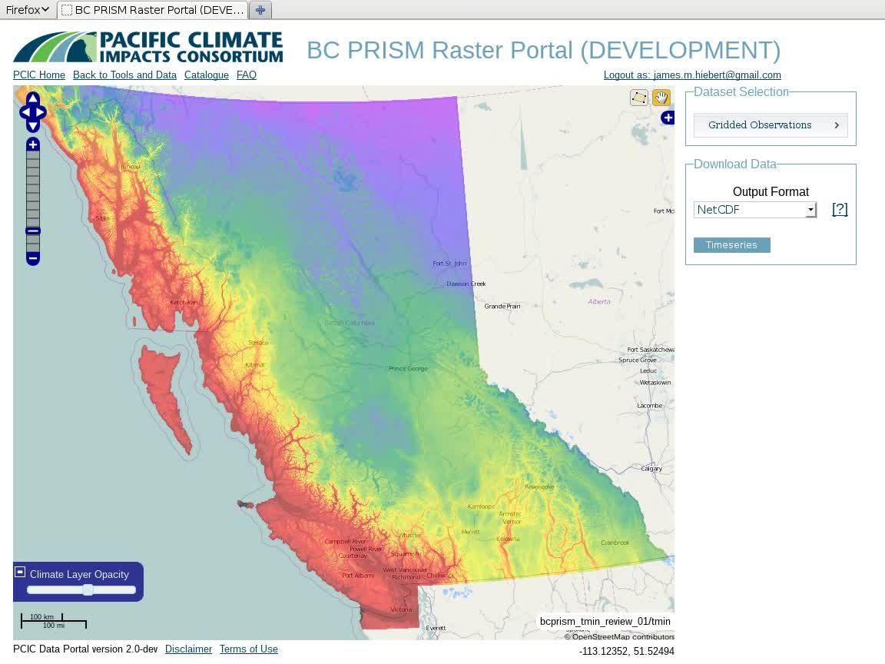
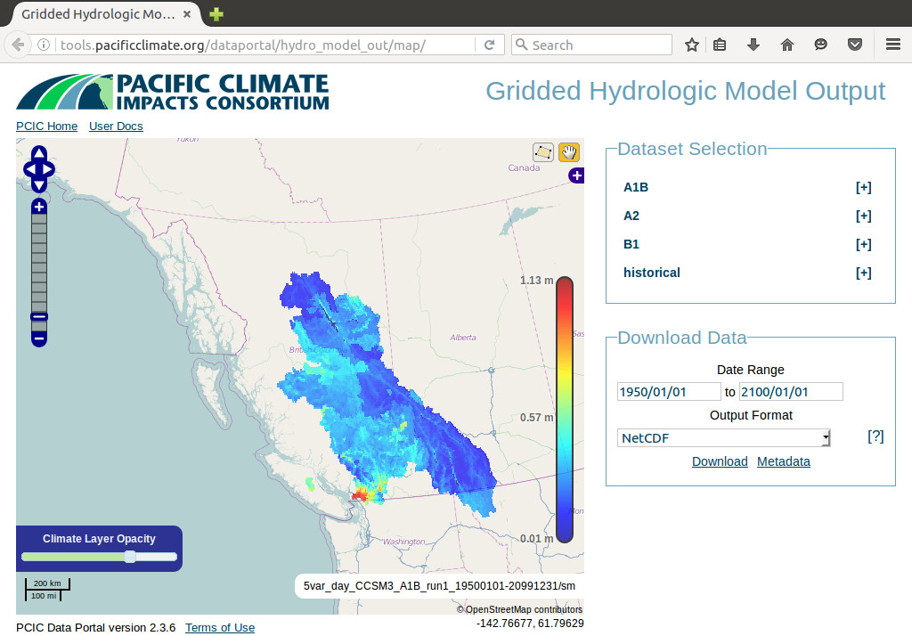
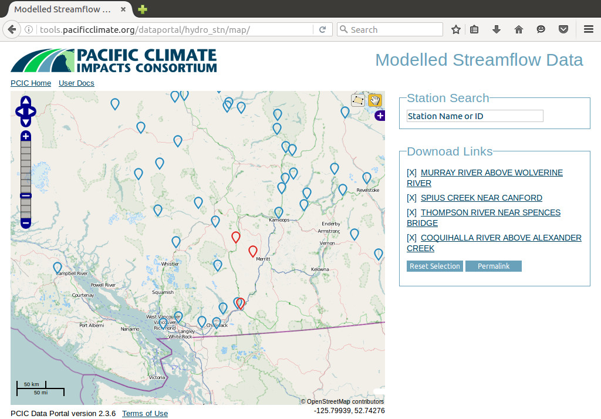
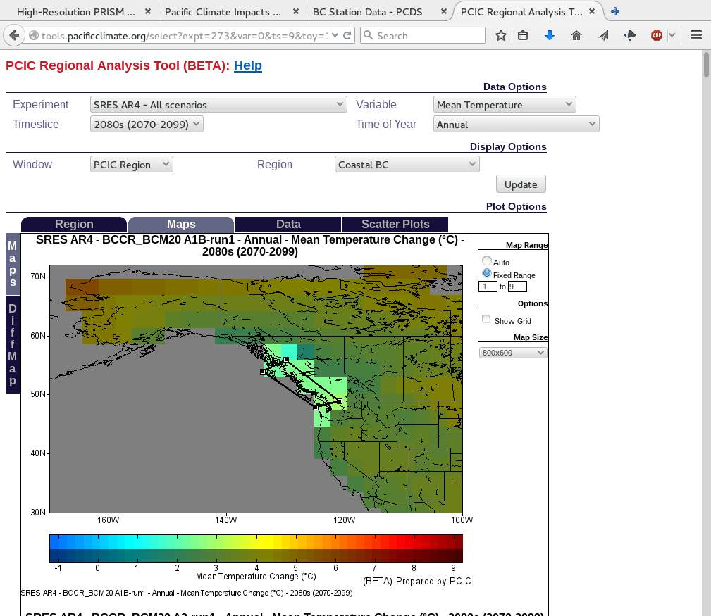

Web-based Regional Climate Analysis
James Hiebert and Basil Veerman
2016-06-24
About me
PCIC's Data Products





2015 Usage
10.0 TB
81576 requests
849 users
Information, not data
The R.A.T.

Features
Feature parity with RAT
Better usability
More able to add data for analysis
Client side plotting (less server resources)
Supports data with heterogeneous resolutions (both in time and space)
System and data are
decoupled
Deployability
Built for use in containers
Deployable to any* PaaS provider
Reusability
Architecture of separation
Backend data can be used/queried by multiple clients/users
Maintainability
The RAT was
not
maintainable
Adding data required substantial knowledge about the internals of the system
Not all code under version control
Work smarter, not harder
LOC
Rat
CE
Backend API
9273
1014/1924
Data Prep
5841
507
Frontend
9568
3785
Automated testing
Tests run when you commit/push code changes
Prominent build status
Back end
Front end
Architecture
SVG drawing of Climate Explorer architecture
Architecture
SVG drawing of Climate Explorer architecture
Backend API
Four base calls
http://localhost/api/metadata
http://localhost/api/data
http://localhost/api/timeseries
http://localhost/api/stats
Plus two wrappers:
http://localhost/api/multimeta
http://localhost/api/multistats
Backend is for computers
The front-end is for you
...and pretty much everyone
Demo to follow